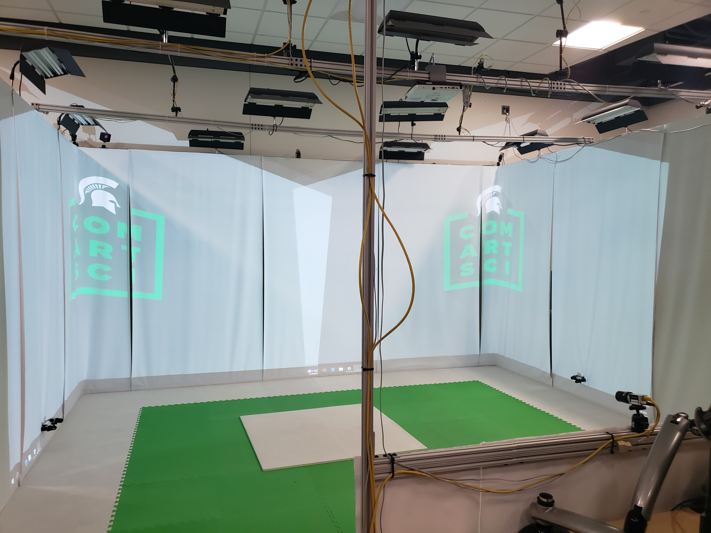
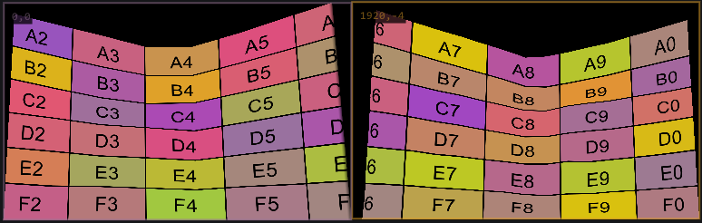

This is an over arching view of the projection tools and projects I have worked on. All of these are personal passion projects that have some ground in things I have seen and wanted to try and
recreate effectively and inexpensively
The first is an interactive projection project that I created it uses 2 projectors and a camera to
show projection only where people are in relation to the projection. This was my first experience with this type of projection mapping, for this I used a software called Lightact. Using the the software
I was able to create a large blended display using Lightact's blending and mapping tools. To mask I used a standard web cam and Lightact's built in computer vision tools to remove the background from the webcam
video. I found this to be a fantastic first try at projection blending and mapping. I have made a change to the camera and am now using a kinect and its IR camera to get a bit better background removal.
The next step for this would be to precisely calibrate the cameras to try and project only on people in the scene to do some basic 2d projection mapping and applying a texture to people in the space. Next
I would like to also start to have the projection react to people in a more interactive sense instead of the current abstract.

This second project was another 2 projector mapped display, I used Lightact again to perform the distortion and mapping. While not the best VR CAVE this proof of concept is a great example of the
functionality of a CAVE in the MoCap space we have. I spent a number of hours fixing the distortion on the projectors to have one large 1 full wall plus 2 half walls show up properly. For content I am using
Spout to stream 3 1920x1200 outputs to Lightact where I then combine them into one 5760x1200 canvas. From there I mapped the 2 projectors onto the canvas and output to a both projectors with a 3840x1200 output
I learned a lot about these tools from this project and I am excited to learn even more about them. My next step is to create a plugin for Unreal and then replicate the spout system in Unity and create a plugin for
that as well.

The CAVE has now been converted to also work as a low cost projection based Virtual Production Environment to try and determine how feasible and how useful the system would be as a teaching and film tool to other parts of the
University.
The camera tracking is performed by a VIVE tracker, this allowed for an inexpensive but accurate way to track the camera and an easy way to mount it in the shoe of the camera.
In the video above the background moves according to the same movement as the camera allowing for a 3d effect in the background.
Unreal is able to us any space and render it and run it in real time as the background of the video. This system unfortunately is less than ideal, due to the use and positions of the projectors there is a lot of shadowing
on the background and the acting space is very small these two are very easy to solve with more space. However the effect of real world lighting like you can get from LED walls was not possible with only 4000 lumens a projector.
However as a proof of concept it showed us many of the hurtles that might occur if we were to pursue it on a large scale.
Special Thanks to Andrew Dennis for helping procure some of the material for this project, and for being my model in the video
back